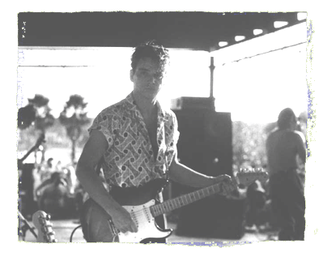

 Игра "Fabulous Thunderbirds" стала стандартом, которому начали следовать молодые группы. Кроме этого, "T-birds" служили подтверждением того, что свежие блюзовые силы сосредоточены именно в Остине. И вскоре, Остин теряет репутацию "дешевого" города и превращается в самый настоящий boomtown.В 1979 году "T-birds" заключают контракт на запись с небольшим независимым лэйблом "Takoma records", и выпускают пластинку "Girls Go Wild". Потом были "What's The Word"(1980, Crysalis records) , "Butt Rockin"(1981, Crysalis records), "T-bird Rhythm"(1982, Crysalis records). Альбом 1986 года "Tuff Enuff", вышедший на "Epic-Sony" стал платиновым, отправив, в добавок, свой заглавный сингл в американский Тор 10. Так к "Fabulous Thunderbirds" пришла общенациональная известность. Периодически Джимми отлучался из группы, чтобы делать что-то на стороне. Чаще всего с братом Стиви, который в 1983 году потряс музыкальный мир своим великолепным альбомом "Texas Flood". К тому времени, это был уже Стиви Рэй Воэн, а его шелковое, в духе Хендрикса, кимоно, черное сомбреро и инициалы SRV на потрепаннном страте стали "торговыми марками". Джимми Воэн помогал брату в записи его второго альбома "Couldn't Stand The Weather" (песни "Couldn't Stand The Weather" и "The Things (That) I Used To Do") и в ряде концертных выступлений. |